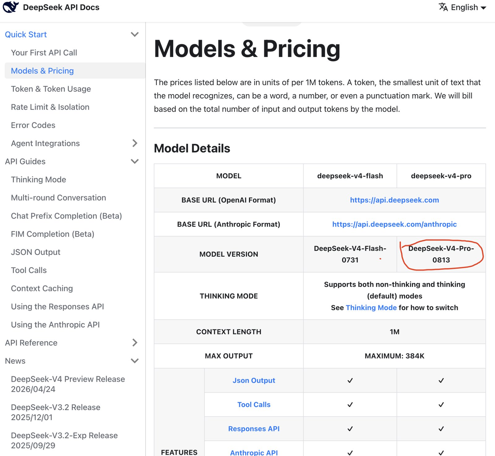

News
What is changing in the DeepSeek API, and what it does to the
cost of a call. Curated from official announcements and checked against the
live API where that is possible; the in-terminal feed is
ds docs changelog.
2026-08-12 · V4-Pro official release (0813)
The preview is over. The
Models & Pricing page now lists
the model version as DeepSeek-V4-Pro-0813 – a quiet
table-cell change, no news post upstream. The model ID stays
deepseek-v4-pro, the specs stay 1M context and 384K max output,
and the rate card stays where it has been since 2026-08-02.
{kind=link}

What changed is the checkpoint. Like Flash's 0731 release, the GA build is re-post-trained for agent work; DeepSeek's launch-day numbers circulating in the community put Terminal-Bench 2.1 at ~87.9 (preview: 72.1), DeepSWE at ~62.7 (preview: 12.8) and Toolathlon-Verified at ~74.1 (preview: 55.9). Jumps that size are post-training and harness work, not a new base model – and none of them are independently verified yet, so treat the preview numbers as the floor and these as the claim.
What it changes here: nothing to do. Anything already
sending deepseek-v4-pro – ds chat -m
deepseek-v4-pro, the claude-opus-* remap on the
Anthropic format – has been on the new
checkpoint since the cell changed. Same price, stronger model; the
estimates already price it correctly.
2026-08-06 · a broad price rise is comingdate tba
DeepSeek posted a notice in the platform console: all API services will be repriced “in the near term”, and the increase is expected to be substantial. Developers are advised to plan call volume and keep top-ups sized to what they will actually use. The final schedule and the new numbers are “subject to the official announcement” – and as of this page's build there is none.
The notice appears in the console rather than on the docs site, so it is easy to miss from code. It was widely reported on 2026-08-06 Beijing time.
The same notice went out by email to API account holders the same day, bilingual and unambiguous about the direction. The email adds one thing the console banner does not: continuing to use the service after the adjustment counts as accepting it, and the offered alternative is cancelling and applying for a refund. Received and archived here as the primary source:

What it changes here: nothing, yet. The
cost page and ds models price from
the published card of 2026-08-02 until DeepSeek publishes a new one. The
ledger stores exact token counts rather
than prices, deliberately – when the card changes, every historical
call can be repriced under it.
announced 2026-06-29 · 2× during peak hoursdate tba
The pricing page has carried this since late June: the API will move to peak/off-peak pricing, with every billing item – input, cached input, output – costing 2× the regular price during peak hours. Off-peak, the current card stands.
| Window | Beijing (UTC+8) | UTC | Multiplier |
|---|---|---|---|
| peak | 09:00–12:00 | 01:00–04:00 | 2× |
| peak | 14:00–18:00 | 06:00–10:00 | 2× |
| off-peak | everything else | everything else | 1× |
The effective date is still “subject to the official announcement”. This CLI deliberately does not apply the multiplier to its estimates before that date exists – doubling every figure on a guess would be inventing data. The day it is real, the ledger's stored token counts make the switch a repricing, not a migration.
Two practical notes. First, the context cache discount is 50×; the peak multiplier is 2×. Prompt structure will still dominate your bill. Second, if batch work can move, move it – the off-peak window covers the whole European and American working day.
2026-07-31 · V4-Flash official release
The official DeepSeek-V4-Flash API entered public beta: same model name, same calling convention, re-post-trained weights with substantially stronger agent behaviour – DeepSeek's published numbers have it ahead of V4-Pro-Preview on Terminal Bench, DeepSWE and the rest of the agent suite. It natively speaks the Responses format and is explicitly adapted for Codex. The official V4-Pro release “will follow soon”.
2026-04-24 · V4 arrives, the old names leave
deepseek-v4-pro and deepseek-v4-flash became the
API's two models, served through both the OpenAI and Anthropic interfaces.
The legacy names deepseek-chat and deepseek-reasoner
were aliased to flash for a grace period and retired on
2026-07-24 – anything still sending them gets an
error, not a quiet remap.
Watching this without watching this page
This page is curated, not generated, so it carries what matters and skips what does not. The complete feed:
ds docs changelog # DeepSeek's own change log, in the terminal, offline
ds docs sync # refresh the snapshot the binary carries
ds models # the rate card the estimates use, next to the live model listUpstream: the official change log and pricing page, and status.deepseek.com for incidents.